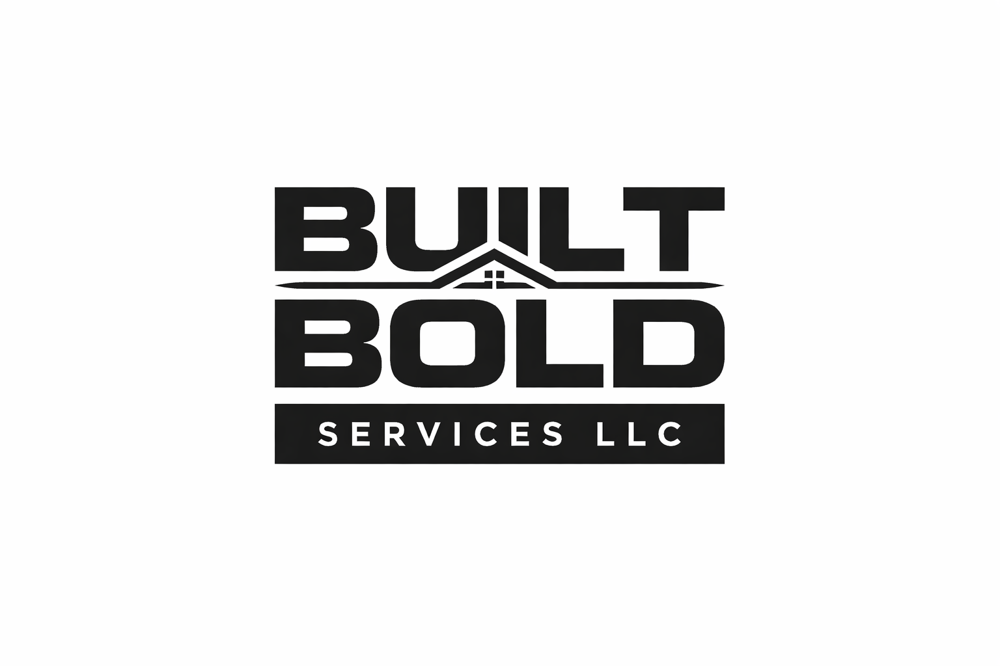

Commercial Cleanouts
Professional removal and clearing services for offices, storefronts, properties, storage areas, and job sites.

Commercial Cleanouts • Hauling • Light Contracting
Commercial-First Service Across Montgomery County & Beyond
Built Bold Services helps keep projects moving with reliable commercial cleanouts, debris hauling, turnover support, furniture assembly, TV mounting, light demolition, and general property service work. We also handle residential jobs with the same professional approach.
Services
Professional removal and clearing services for offices, storefronts, properties, storage areas, and job sites.
Clean, efficient hauling for materials, bulk items, renovation debris, and non-hazardous job site waste.
Move-out, tenant turnover, and property prep support for managers, landlords, and investors.
Furniture assembly, TV mounting, fixture setup, and practical install support for homes and businesses.
Selective tear-out and light demo work done carefully to help prepare spaces for the next phase.
Flexible labor support for small projects that need a professional, dependable crew and a quick turnaround.
Why Built Bold
We position our work as commercial cleanouts, debris hauling, turnover support, and property services because that is a more accurate, more professional reflection of what we do for clients.
Whether you are a contractor, property manager, business owner, landlord, or homeowner, our goal is simple: show up ready, communicate clearly, and help get the job handled without the runaround.
Areas Served
Get in touch
Call or email and we’ll help you figure out the next step.